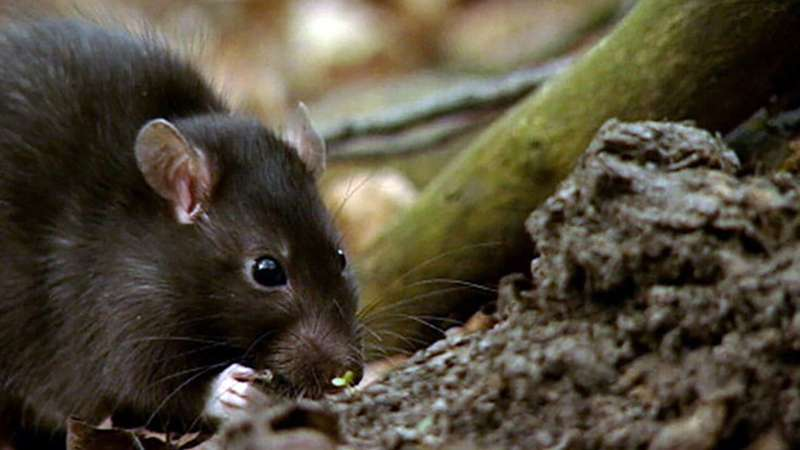
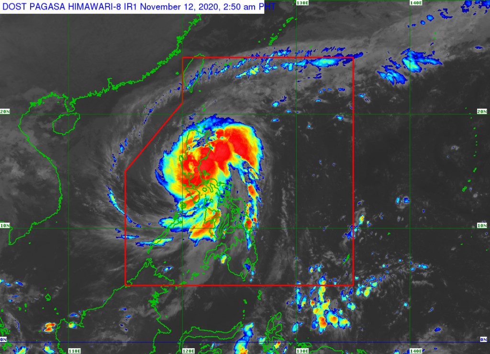
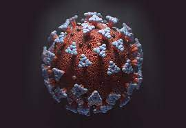

we will discuss 2 communicable diseases and 1 natural disaster.
Introduction
Leptospirosis is a bacterial disease that affects humans and animals. It is caused by bacteria of the genus Leptospira. In humans, it can cause a wide range of symptoms, some of which may be mistaken for other diseases. Some infected persons, however, may have no symptoms at all.
For more information go to the other page.
Typhoon Ulysses (Vamco), the Philippines' 21st tropical cyclone for 2020, hit Luzon hardest from November 11 to 12. The typhoon unleashed powerful winds and torrential rain that killed dozens of people, destroyed thousands of homes, and left swathes of the island region flooded.
For more information go to the other page.
COVID-19 is a disease caused by a new strain of coronavirus. 'CO' stands for corona, 'VI' for virus, and 'D' for disease. Formerly, this disease was referred to as '2019 novel coronavirus' or '2019-nCoV.'
For more information go to the other page.